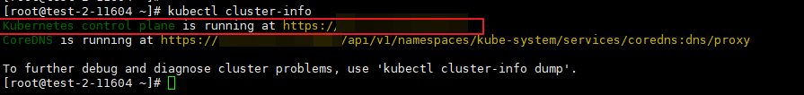
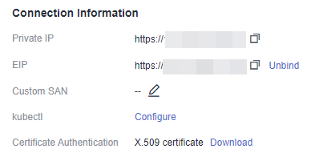

Obtaining the Certificate Value During Token Authentication (for CCE)
Procedure
Use PuTTY to log in to the Kubernetes cluster management node whose configuration file is to be obtained.
Run the kubectl cluster-info command to query the current cluster control plane.

Log in to ManageOne Operation Portal.
Before querying the kubeconfig configuration file, check whether the control plane of the current cluster is connected through the address of the application scenario. Use PuTTY to log in to the Kubernetes cluster management node whose configuration file is to be obtained.
Query the connection information to check whether the current cluster control plane is connected through the address of the user's application scenario.

If no (for example, the cluster control plane uses a private IP address for connection, while a public network address is used for the user scenario), you need to switch the kubectl access mode based on the application scenario. The procedure is as follows.
Log in to the Kubernetes cluster management node and switch the kubectl access mode based on the application scenario.
For intra-VPC access, run the following command:
kubectl config use-context internal
For Internet access, run the following command:
kubectl config use-context external
Run the following command if two-way authentication is required for Internet access:
kubectl config use-context externalTLSVerify
After the setting is complete, run the kubectl cluster-info command again to query the cluster information and ensure that the access mode is successfully switched.
If yes, go to the next step.
Run the following command to query the configuration file information. In the command output, the parameter value of certificate-authority-data in the cluster field is the certificate value.